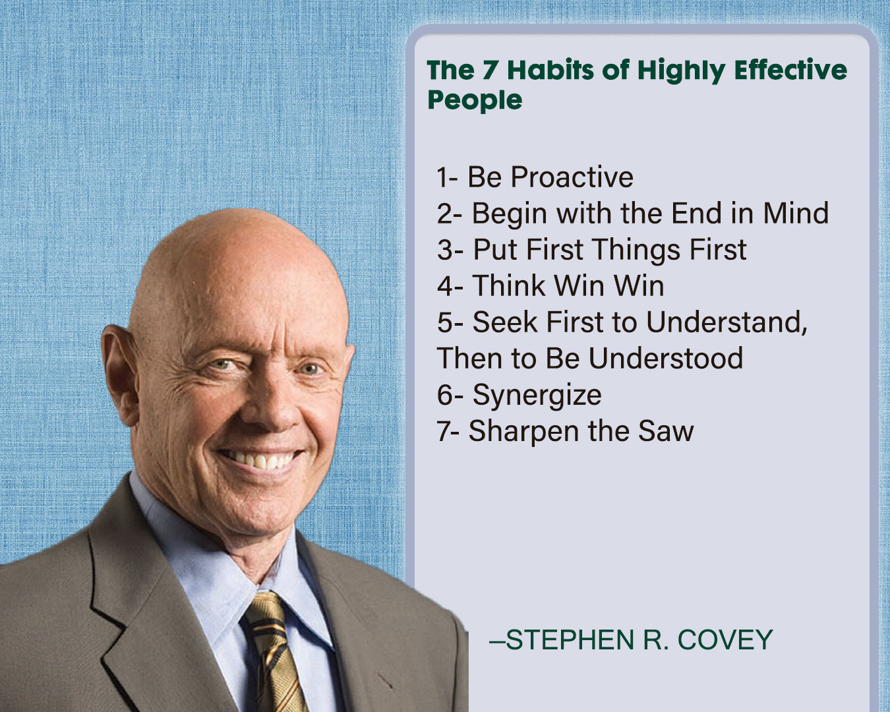
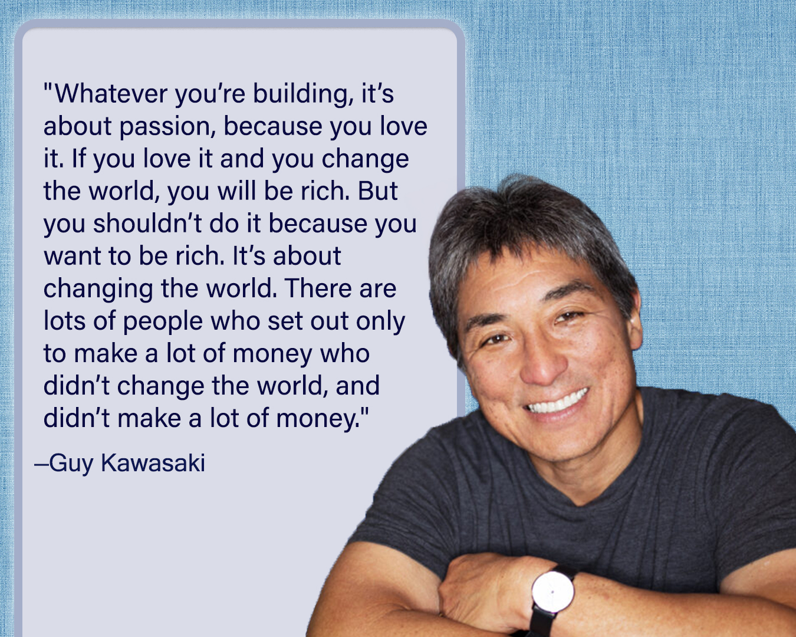

Week 07 Journal Entry
Stand True and Faithful
I love President Hinckley. Listening to his talks fills me with hope, confidence, and inspiration to be better. In this talk I learned the importance of being true to the Lord, to myself, to others, and to my values. He encourages us to follow our conscience and make righteous choices, stand firm in faith, live with integrity, use clean language, be honest, serve, be good friends, avoid gossip, and listen to our parents. By respecting our divine worth and potential we build self-esteem and confidence. Life should include fun, laughter, and fulfillment. I know my life would be better if I listened more carefully to my mother.
I love that he reminds us we are important to the Lord’s work. When we stand true and faithful, the Church becomes stronger. Even when we make poor choices, we are not lost. Repentance is always possible, and the Lord is ready to help us.
He concludes with a beautiful blessing:
"Live the gospel, be true to the faith, cling to the Church, honor your parents, love the Lord, and walk as a child of God. That you may do so, and taste much of happiness, is my prayer in your behalf, with love in my heart, in the name of Jesus Christ, amen."
I feel so grateful for his counsel and his love for us. His words encourage me to live with integrity, serve others, and strengthen my faith. I want to walk as a child of God, embrace my potential, and find joy in following the Lord.
The 7 Habits of Highly Effective People

I had the opportunity to read The 7 Habits of Highly Effective People. The book explains seven habits that help a person grow, become more responsible, and build better relationships. The main idea is that real success starts from the inside. It begins with your character, your choices, and your mindset.
I learned that being proactive, setting clear goals, managing time wisely, and treating others with respect can truly shape your future. It was interesting to see how small daily habits can slowly build the kind of person you want to become. What stood out to me was the idea that we always have a choice in how we respond to situations. The book explains that we are not controlled by our circumstances, but by the decisions we make. That perspective really made me think about personal responsibility and how small choices can change the direction of our lives.
7 Habits
I watched the video 7 Habits where Jim Ritchie explains the seven habits with clarity and insight. He showed how these habits help us grow as individuals and improve the way we relate to others. The first three habits are about taking control of our lives, being proactive, knowing what we want, and focusing on what matters most. I liked how he said we need to win with ourselves first before we can succeed with others. The next three habits focus on relationships, listening to people, thinking win-win, and working together to create something greater than what we could do alone. It reminded me that success is not just about what I achieve but also about how I treat others and the trust I build. The last habit is about taking care of ourselves, sharpening the saw, so we can stay strong, keep learning, and keep growing. What stayed with me most is that consistent effort makes things easier over time. It made me reflect on my habits and the small steps I can take each day to become a better version of myself.
Passion vs. Money

I watched the video Passion vs. Money by Guy Kawasaki, and it really made me reflect. He explained that we shouldn’t build our lives around getting rich, but around doing something we truly care about. If we focus on changing the world in our own way and doing work we love, success may follow. But if money is the only goal, it can leave us feeling empty.
What stayed with me most was his reminder that money is not everything. Sometimes we think certain achievements or possessions will make us feel fulfilled, but later we realize that what truly matters are experiences, growth, and meaningful relationships. I loved that he encourages students to value their time in school, enjoy learning, travel if possible, and not rush into the workforce. There will always be time later for stress and responsibility. What matters most is doing meaningful work that you care about, not chasing money as the main goal.
Book Report
I was able to finish the Mastery book report, and it was an interesting and insightful reading. The book taught me that mastery is not about a single achievement or moment of success but a lifelong process of learning and growth. The book shows that true mastery comes from seeking good instruction, practicing consistently, surrendering ego, acting with intentionality, and pushing the edge of what is possible. The path of mastery applies not only to skills or careers but to everyday life, relationships, and ordinary tasks. For me, the main lesson is that mastery is a constant journey. It requires humility, patience, and hard work, recognizing that I can grow and improve but will never be perfect or know everything. The book emphasizes that the process itself, the steady commitment to learning and being fully present, is what creates true excellence and fulfillment.